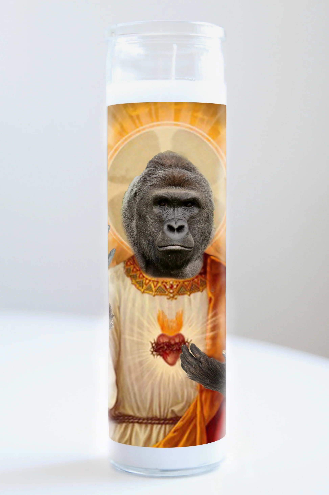
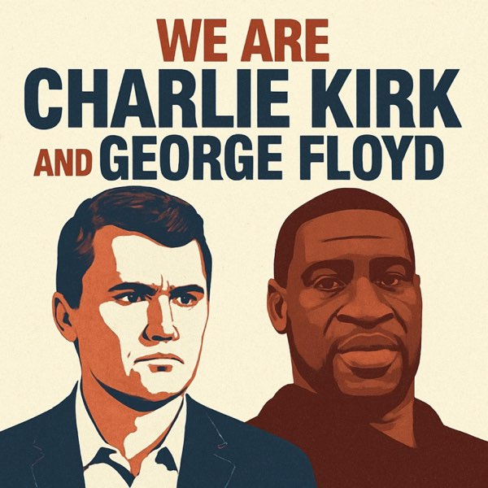
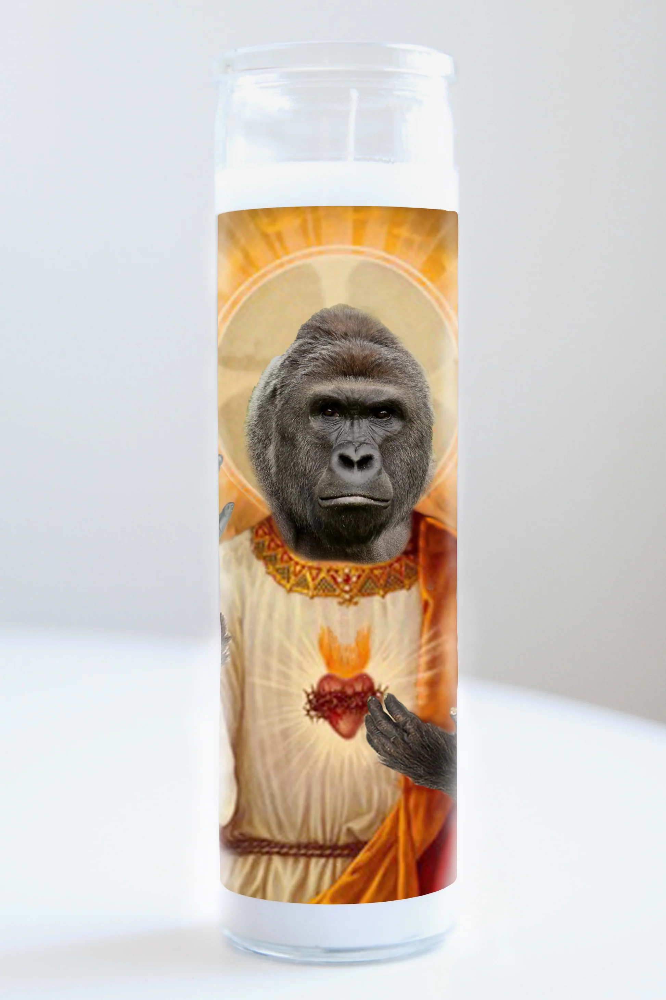
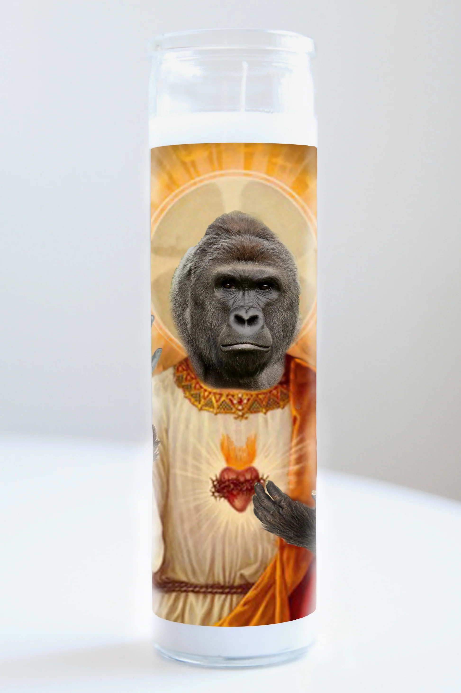

Founder of Turning Point USA — conservative youth org
Famous for viral campus debate clips challenging liberal students
The Gen Z face of MAGA — built to bridge boomers and young conservatives
Hated by the far-right "gropers" as embarrassing and a sellout
September 10, 2025
Charlie Kirk was shot and killed in front of students in Utah
A man whose prominence came from viral clips — whose death would be instantly played to millions
Bystander "Elder TikTok" — five people away in line — immediately started filming and promoting his Instagram
"Jesus is Lord. Make sure you subscribe to Elder TikTok on Instagram" — while Kirk lay dying
A fundamental pathology of the attention economy — trauma as content, followers as currency
Death as Entertainment & Propaganda
Trump: "Millions of Charlie Kirks were created today"
Flags at half-staff — his death weaponized as state propaganda
The line between mourning and marketing, grief and spectacle, completely dissolved
The Memes
The Kirkification
Week 1: AI-generated "Kirk as Terminator" web series — crypto accounts venerate him through deepfakes
Month 1: Martyr narrative collapses — Kirk becomes the one thing that triggers MAGA
Month 2+: Total Kirkification — every face on the internet replaced with Kirk's
"We Are Charlie Kirk" — AI song by Spellexma, generic enough to swap anyone's name in
Culminated in Trump & JD Vance singing it together as a deepfake
Three Factions, One Meme
MAGA Boomers
Sincerely share AI slop
Kirk ascending to heaven
Kirk talking to Jesus
Megachurches play these videos
The Gropers
Far-right Gen Z extremists
Hated Kirk as a sellout
Use ironic memes to spread neo-Nazi imagery
Agartha edits, black sun symbols
Leftists
Ironic sharing
Mock the martyr narrative
Dark absurdist humor
Process political trauma
The Agartha Pipeline
Far-right movement experimenting with Nazi occultism as new iconography
Agartha: mythical city at center of hollow earth — only accessible to white people
Kirk gets an "Aarthan makeover" — blonde, blue-eyed, Aryan
Content designed as an algorithmic gateway
You laugh at the face-swap → algorithm feeds you harder content
Irony cannot defeat irony
Harambe — Patient Zero
The Template
The Necromemetic Cycle
1. Someone dies
2. The internet mourns (sincerely and ironically)
3. The person becomes a symbol
4. The symbol has nothing to do with who they actually were
5. The cycle repeats with the next death
Martin Luther King Jr.
"I concur concerning my father. Please stop."
— Bernice A. King
AI-generated clips editing his "I Have a Dream" speech
Deepfakes of MLK and Malcolm X fighting each other
Videos depicting MLK making racist noises
Rod Stewart played AI-generated footage of dead musicians in Heaven at a concert
The First Internet Saint
May 2016: Harambe shot at Cincinnati Zoo
The meme transcended the event — he became a symbol of internet culture itself
"Harambe's Heaven in the Sky" — an ongoing digital canonization
Every celebrity death added to the mural — an internet folklore tradition
Not unlike the Catholic Church's process of sainthood
"If you were a progressive, the Harambe meme gave you a chance to mock what you viewed as the hypocritical haranguing of the mainstream while avoiding real issues of social justice; and if you were a conservative, the Harambe meme gave you a chance to mock liberal hysteria."
— Aja Romano, Vox

What Is Necromemetics
Bodies Into Myths
"We turn people's bodies into myths and narratives that then define social norms."
— Ruby Justice Lo, artist & researcher
We think more about the dead as people who died than as people who lived
Governments use the dead as symbols of legitimacy
Movements turn them into martyrs to rally behind
The person becomes an idea — less about the human, more about the story
Nothing New Under the Sun
Ancient
Pharaohs deified in death
Roman emperor cults
Catholic saint canonization
Modern
Che Guevara on a t-shirt
JFK's eternal flame
Princess Diana iconography
Internet
Harambe's Heaven memes
Robin Williams tributes
Charlie Kirk deepfakes
Deepfakes Escalate Everything
Before vs. After AI
Before AI
Required skill (Photoshop, editing)
Memes were crude and obvious
Limited to static images
Took time and effort
After AI
Zero skill required
Photorealistic video output
Can generate anything
Takes seconds
George Floyd was martyred by the left and defiled by the right. Charlie Kirk was martyred by the right and defiled by the left. Either way, they become ideas — not people.

Sora & Synthetic Resurrection
OpenAI's Sora generates hyper-realistic video from text prompts
Users immediately created offensive deepfakes of the dead
MLK, JFK, Queen Elizabeth II, Stephen Hawking — all turned into digital puppets
OpenAI paused MLK images only after the King estate complained
Everyone else? Still fair game
The dead have no rights to their own image
Sora in Action
Sora in Action
AI Video Examples
Who Gets Protection?
"King's estate rightfully raised this with OpenAI, but many deceased individuals don't have well-known and well-resourced estates to represent them. We want to avoid a situation where unless we're very famous, society accepts that after we die there is a free-for-all over how we continue to be represented."
— Henry Ajder, generative AI expert
Protected (if they ask)
MLK (after estate complained)
Famous people with resourced estates
Unprotected
Everyone else
The dead can't opt out
No estate = no recourse
The Opt-Out Problem
"It plays too closely with trying to rewrite aspects of history."
— Olivia Gambelin, AI ethicist
OpenAI's model: opt-out, not opt-in
Burden falls on the dead (or their families) to defend their image
"Trial and error by firehose" — ship first, fix later
OpenAI claims "strong free speech interests" in depicting historical figures
But continues to allow clips of JFK, Queen Elizabeth, Hawking
The Bigger Picture
Conclusion
Key Takeaways
Photography gave us the power to preserve the dead
Photoshop gave us the power to manipulate them
AI gives us the power to resurrect them
The dead can't consent, can't opt out, can't sue
The question is no longer whether we mythologize the dead — it's who gets to control the myth.
 
